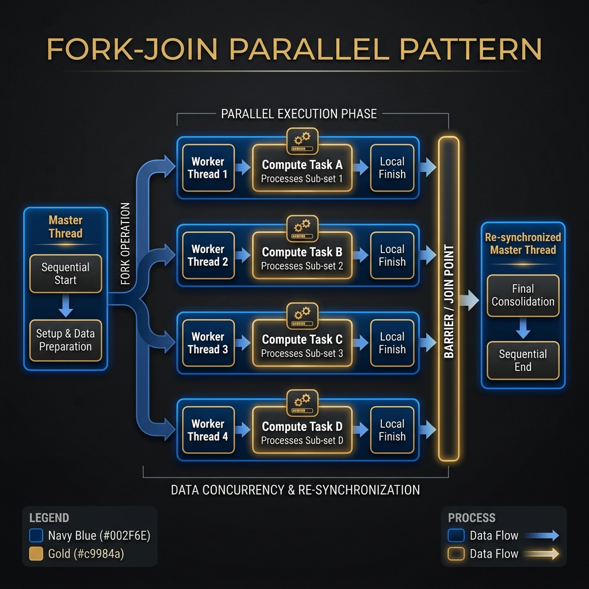
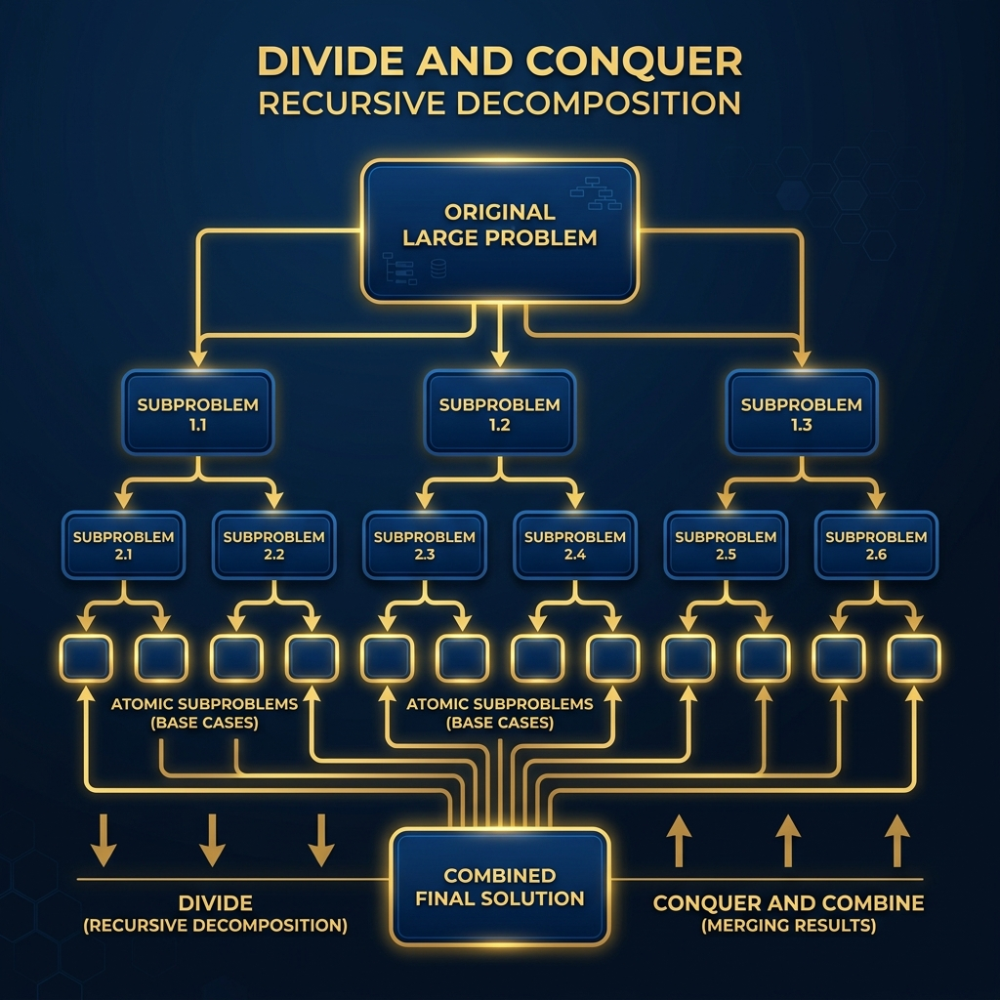
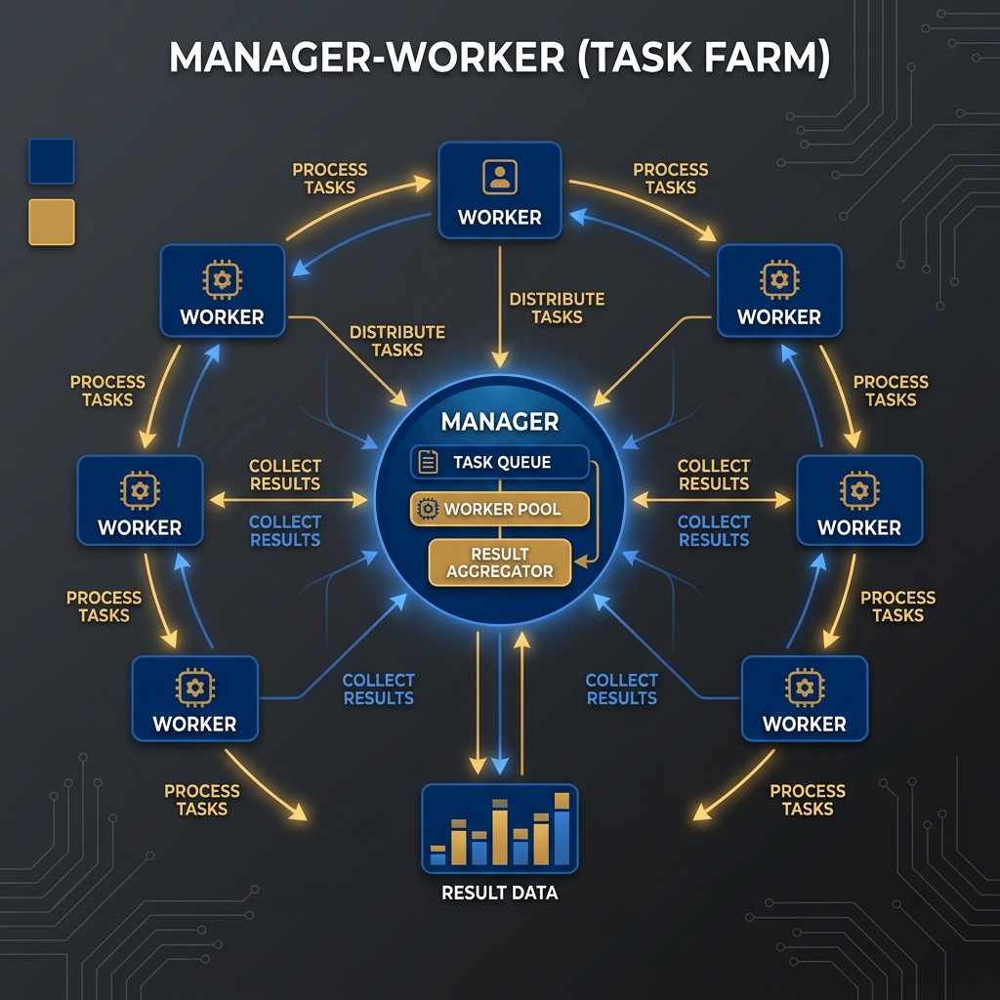
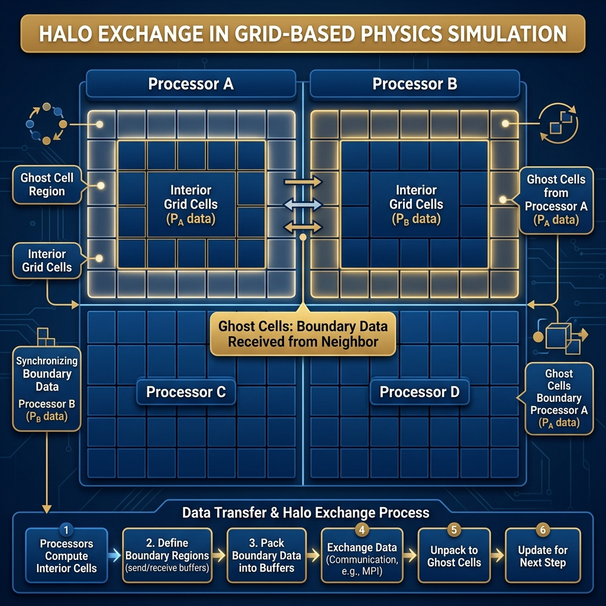
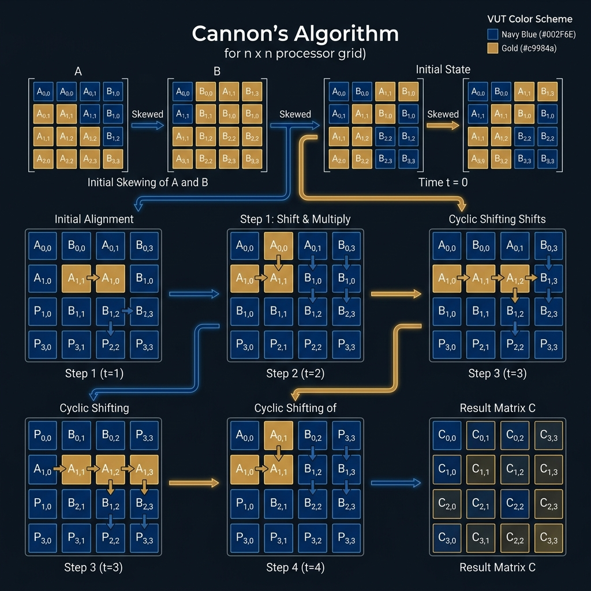

Parallel Algorithms
HPC & Cluster ComputingCourse: Operating Systems 4 (HPC)
Module: EIOSY4A
Topic: Parallel Algorithm Design Patterns
Reading Time: ~18 Minutes
By the end of this week, you should be able to:
1. Analyze parallel algorithms based on Work, Span, and Cost Optimality metrics.
2. Design parallel solutions by applying rigorous Domain and Functional Decomposition strategies.
3. Evaluate the suitability of Fork-Join, Divide-and-Conquer, and Manager-Worker patterns for various workloads.
4. Optimize communication overhead by applying the surface-to-volume ratio principle.
5. Trace and critique the execution flows of advanced algorithms (Halo Exchange, Cannon's Algorithm, BFS).
Welcome to Week 7! This week, we transition from the tools of parallelism (MPI, OpenMP) to the strategy of parallel algorithm design. You will learn the standard parallel motifs that underpin all major scientific computing applications.
Assessment Alignment: The weekly quiz and practical assignments for this module specifically evaluate the Learning Outcomes listed below, verifying your ability to operate at an NQF Level 7 standard of analysis and synthesis.
Overview
This week, we transition from the tools of parallelism (MPI, OpenMP) to the strategy of parallel algorithm design. Implementing efficient parallel logic requires a fundamental shift in problem-solving approaches. We will explore standard parallel design patterns, often called "motifs," analyzing their communication behaviors, scalability characteristics, and best-use cases.
This content strictly follows Sterling Chapter 9 (Parallel Algorithms).
7.1 Introduction
Parallel algorithms differ fundamentally from sequential ones. In a sequential world, optimization focuses primarily on minimizing the operation count, often denoted as $O(N)$. However, in a parallel computing environment, the primary goal is optimizing execution time, which is a complex function of computation, communication overhead, and synchronization delays. A highly efficient sequential algorithm might parallelize poorly if it requires excessive data movement.
Designing a robust parallel algorithm involves navigating several critical trade-offs. First, one must consider granularity, deciding between coarse-grained parallelism, which involves a few large tasks, and fine-grained parallelism, which utilizes many small tasks. Second, locality is paramount; algorithms should maximize local cache usage and minimize the frequency of remote data retrieval to reduce latency. Finally, load balancing ensures that all processors contribute equally to the workload, preventing scenarios where some processors idle while others arguably struggle to finish, which ultimately dictates the total runtime.
7.1.1 Complexity Analysis (Big O)
In sequential computer science, we use Big O notation to describe how the execution time grows with input size $N$ (e.g., $O(N)$, $O(N \log N)$). In parallel computing, strictly analyzing $N$ is insufficient because we have a second variable: $P$ (the number of processors). We typically analyze parallel algorithms using the Work-Span Model:
- Work ($T_1$): The total time taken to execute the algorithm on a single processor. This corresponds to the sequential complexity.
- Span ($T_\infty$): The time taken to execute the algorithm on an infinite number of ideal processors. This represents the longest path of dependencies in the program's Directed Acyclic Graph (DAG), or the "Critical Path."
- Cost ($C_p$): The total CPU-hours consumed, calculated as $P \times T_p$. A parallel algorithm is Cost Optimal if its cost is proportional to the sequential Work ($T_1$).
We also evaluate Scalability:
- Strong Scaling: How the execution time $T_p$ decreases as we increase $P$ for a fixed problem size $N$. (Subject to Amdahl's Law).
- Weak Scaling: How the execution time $T_p$ behaves as we increase both $P$ and $N$ proportionally. (Subject to Gustafson's Law).
In addition to algorithmic complexity, we must account for Communication Complexity. For example, the time complexity of MPI collective operations on a cluster with $P$ processors is typically logarithmic:
| Collective Operation | Complexity (Ideal) | Explanation |
|---|---|---|
| Broadcast / Reduce | $O(\log P)$ | Data is distributed/collected via a binary tree. |
| All-to-All | $O(P)$ | Every processor sends unique data to every other processor. |
| Barrier | $O(\log P)$ | Synchronization propagates through the tree hierarchy. |
Understanding these costs explains why MPI collective functions are almost always superior to manual loops ($O(P)$) written by the user.
With a theoretical understanding of parallel cost and scalability, we must next determine the practical strategy for dividing our problem across these processors.
7.2 Domain Decomposition
Before selecting a specific algorithm, we must decide how to map the problem onto the available hardware. The most common strategy in scientific computing is Data Decomposition (also known as Domain Decomposition), where we split the data rather than the code.
7.2.1 Data vs. Functional Decomposition
Functional Decomposition
In this approach, different processors execute completely different functions (tasks).
C Example (MPI)
if (rank == 0) {
calculate_discriminant(a, b, c);
} else if (rank == 1) {
calculate_denominator(a);
}
Explanation: The program behavior diverges entirely based on Rank. Rank 0 does math task A, while Rank 1 does math task B. This is hard to scale to 1000 cores because we likely do not have 1000 unique functions to assign.
Data Decomposition
In this approach, we split the memory (domain). All processors execute the same function, but on different indices of the data array.
C Example (MPI)
// Array size N=1000, 4 Processors.
// Each processor acts on a chunk of 250 items.
int chunk_size = 1000 / 4;
int start_index = rank * chunk_size;
int end_index = start_index + chunk_size;
for (int i = start_index; i < end_index; i++) {
process_weather_data(grid[i]);
}
Explanation: Every processor runs process_weather_data. However, Rank 0 processes indices 0-249, while Rank 1 processes 250-499. This scales easily; if we get more processors, we can simply reduce the chunk_size or increase the total problem size $N$.
7.2.2 1D vs. 2D Decomposition
Consider a large 2D matrix of size $N \times N$ distributed across $P$ processors. How we slice this matrix impacts performance significantly.
- 1D (Slab/Strip) Decomposition: We assign $N/P$ rows (or columns) to each processor. This is simple to implement but inefficient for communication. A processor touches the full width of the domain, meaning its "boundary" is long ($N$).
- 2D (Block) Decomposition: We divide the processors into a logical grid ($\sqrt{P} \times \sqrt{P}$) and assign a sub-square block of size $(N/\sqrt{P}) \times (N/\sqrt{P})$ to each.
7.2.3 Surface-to-Volume Ratio
The efficiency of a parallel algorithm is governed by the Surface-to-Volume Ratio.
- Volume: Represents Computation (the work done on the data inside the block). This is "Good" work.
- Surface Area: Represents Communication (the data on the edges that must be sent to neighbors). This is "Overhead."
We want to maximize the Volume (Compute) while minimizing the Surface (Communicate). A square (2D decomposition) has a smaller perimeter-to-area ratio than a long thin rectangle (1D decomposition). Therefore, 2D Decomposition generally scales better than 1D decomposition for large processor counts.
Once the domain is decomposed, we need a control structure to manage execution. We will now explore a spectrum of standard "Parallel Motifs" used to solve these problems. We begin with simple shared-memory loops (Fork-Join), progress to recursive hierarchies (Divide and Conquer), and explore dynamic load balancing (Manager-Worker). Finally, we will examine domain-specific patterns for huge datasets, including independent tasks (Embarrassingly Parallel), nearest-neighbor physics (Halo Exchange), dense linear algebra (Cannon's Algorithm), and irregular graph traversals (BFS).
7.3 Fork-Join
The Fork-Join model stands as one of the oldest and simplest parallel patterns, serving as the foundational model for shared-memory environments like OpenMP. It effectively captures the concept of dynamic parallelism where the flow of execution branches and merges based on the program's needs, as illustrated in Figure 7.1.
Logic Flow

Figure 7.1: The Fork-Join pattern showing the master thread branching into worker threads and re-synchronizing at the barrier.The mechanism operates through a predictable cycle. A master thread executes code sequentially until it encounters a designated parallel region. At this point, it "forks," splitting into multiple worker threads that execute their assigned tasks independently and in parallel. Once the workers complete their tasks, they enter a "join" phase, which acts as a synchronization barrier. The master thread waits until all workers have finished before resuming sequential execution. This model is particularly effective for loop parallelism, where iterations are independent and can be safely distributed among threads.
C Implementation (OpenMP)
#include <omp.h>
#include <stdio.h>
void parallel_work() {
int data[1000];
// Fork: Create threads to handle loop iterations
#pragma omp parallel for
for (int i = 0; i < 1000; i++) {
data[i] = i * i; // Distinct, independent work
// No explicit Join needed; #pragma omp for implies a barrier
}
// Join: Master thread resumes here
printf("All work completed.\n");
}
Explanation: The #pragma omp parallel for directive instructs the compiler to generate a fork-join pattern. The 1000 loop iterations are automatically divided among the available threads. The "Join" is implicit; the code will not proceed past the closing brace } of the for-loop until every thread has finished its chunk of work, ensuring printf runs only after all data is computed.
Python Implementation (multiprocessing)
from multiprocessing import Pool
def square(x):
return x * x
if __name__ == '__main__':
data = list(range(1000))
# Fork: Create a pool of worker processes
with Pool(processes=4) as pool:
# Execute map in parallel
result = pool.map(square, data)
# Join: Pool closes and waits here automatically
print("All work completed.")
Explanation: Python's multiprocessing.Pool mimics the behavior of OpenMP. Pool(processes=4) creates 4 independent worker processes (the fork). The pool.map function distributes the data list across these workers, each applying the square function to its assigned items. The with block acts as the join/barrier; the program waits there until all workers finish and return their results.
While Fork-Join is excellent for flat loops, some problems are inherently hierarchical. For these, we turn to recursive patterns.
7.4 Divide and Conquer
Divide and Conquer is a powerful recursive strategy ideally suited for problems that can be decomposed into smaller, self-similar sub-problems. It maps naturally to parallel execution, allowing for massive concurrency as the problem depth increases, as shown in Figure 7.2.
Recursive Decomposition

Figure 7.2: Recursive decomposition of a problem into smaller sub-tasks, forming a task tree.The algorithm proceeds in three distinct phases. First, the problem is divided or partitioned into two or more smaller sub-problems. Next, these sub-problems are "conquered." If a sub-problem is small enough to be considered a base case, it is solved directly; otherwise, the algorithm recurses, further splitting the problem. Finally, the results of the sub-problems are merged to reconstruct the final solution. In a parallel implementation, this creates a dynamic tree of tasks. The initial process spawns child tasks for the sub-problems, which in turn spawn grandchildren, rapidly expanding the available parallelism.
C Implementation (OpenMP Tasks)
// Parallel Mergesort Concept
void mergesort(int *arr, int size) {
if (size < 100) {
serial_sort(arr, size); // Base Case
return;
}
int mid = size / 2;
// Spawn task for left half
#pragma omp task
mergesort(arr, mid);
// Spawn task for right half
#pragma omp task
mergesort(arr + mid, size - mid);
// Wait for children to return (Join)
#pragma omp taskwait
// Merge results
merge(arr, mid, size);
}
Explanation: The #pragma omp task directive tells the OpenMP runtime to create a new task unit for the recursive call, which may be executed by any available thread. Crucially, #pragma omp taskwait creates a synchronization point, ensuring exactly this level of recursion waits for its two children (Left and Right) to finish before proceeding to the merge step.
Python Implementation (concurrent.futures)
from concurrent.futures import ThreadPoolExecutor
def parallel_mergesort(arr, executor):
if len(arr) < 100:
return sorted(arr) # Base case
mid = len(arr) // 2
# Spawn tasks
future_left = executor.submit(parallel_mergesort, arr[:mid], executor)
future_right = executor.submit(parallel_mergesort, arr[mid:], executor)
# Wait for completion (Join)
left = future_left.result()
right = future_right.result()
return merge(left, right)
# Usage
with ThreadPoolExecutor() as executor:
result = parallel_mergesort(data, executor)
Explanation: We use ThreadPoolExecutor to handle the dynamic task spawning. executor.submit is non-blocking; it immediately returns a future object representing the pending result. Calling .result() on that future blocks the current thread until the computation is done (effectively the taskwait). This recursively creates a tree of futures.
Recursive patterns assume we know the structure of the sub-problems. However, when task sizes are unpredictable or highly variable, we need a more dynamic approach to assigning work.
7.5 Manager-Worker (Task Farm)
The Manager-Worker pattern, often referred to as a Task Farm, is a dynamic load-balancing strategy widely used for workloads where task durations are unpredictable. It effectively decouples the generation of work from its execution, as depicted in Figure 7.3.
Logic Flow

Figure 7.3: The Manager-Worker pattern showing the central Manager distributing tasks to Workers and collecting results.The structure consists of a single Manager (typically Rank 0) and multiple Workers (Ranks 1 to P). The Manager maintains a central pool of work and is responsible solely for logistics. Workers request a task, process it, return the result, and request another. This architecture provides excellent automatic load balancing because faster workers naturally consume more tasks.
C Implementation (MPI)
if (rank == 0) {
// MANAGER
int tasks_done = 0;
while (tasks_done < TOTAL_TASKS) {
MPI_Recv(&request_msg, 1, MPI_INT, MPI_ANY_SOURCE, TAG_REQ, ...);
int worker_rank = request_msg_source; // Pseudo-code
MPI_Send(&task_data[tasks_done], ..., worker_rank, TAG_TASK, ...);
tasks_done++;
}
// Send stop signals to all
} else {
// WORKER
while (true) {
MPI_Send(&my_rank, 1, MPI_INT, 0, TAG_REQ, ...); // Ask Manager
MPI_Recv(&task, ..., 0, MPI_ANY_TAG, ...);
if (task.tag == TAG_STOP) break;
process(task);
}
}
Explanation: The Manager (Rank 0) sits in a loop listening for any worker (MPI_ANY_SOURCE) to ask for work. Upon receiving a request, it sends the next available task to that specific worker. The Workers sit in an infinite loop: they explicitly ask for work, wait for the response, perform the work, and then loop back to ask again. The protocol handles load balancing automatically, as faster workers cycle through the loop more times.
Python Implementation (mpi4py)
from mpi4py import MPI
comm = MPI.COMM_WORLD
rank = comm.Get_rank()
if rank == 0:
# MANAGER
tasks = [10, 20, 30, 40, 50]
next_task_idx = 0
closed_workers = 0
while closed_workers < (comm.size - 1):
# Wait for any worker to request
data = comm.recv(source=MPI.ANY_SOURCE, tag=MPI.ANY_TAG, status=status)
source = status.Get_source()
tag = status.Get_tag()
if tag == TAG_REQUEST:
if next_task_idx < len(tasks):
comm.send(tasks[next_task_idx], dest=source, tag=TAG_TASK)
next_task_idx += 1
else:
comm.send(None, dest=source, tag=TAG_STOP)
closed_workers += 1
else:
# WORKER
while True:
comm.send(None, dest=0, tag=TAG_REQUEST)
task = comm.recv(source=0, tag=MPI.ANY_TAG)
if task is None: break # Stop signal
# Do work
print(f"Worker {rank} processing {task}")
Explanation: mpi4py simplifies the types but the logic is identical. The Manager runs a state machine. It uses status.Get_tag() to differentiate between a generic request and other messages. The Worker simply sends a blank message ("None") as a signal to request work. When the tasks run out, the Manager sends None back as a poison pill (Stop Signal) to break the worker's loop.
Manager-Worker handles dependencies and irregularity well, but the ideal case for parallelism is when there are absolutely no dependencies at all.
7.6 Embarrassingly Parallel
The term "Embarrassingly Parallel" refers to the ideal scenario where a problem decomposes into sub-tasks that are completely independent of one another.
C Implementation
// Monte Carlo: Estimate Pi
int count = 0;
#pragma omp parallel for reduction(+:count)
for (int i=0; i<N; i++) {
double x = random_double();
double y = random_double();
if (x*x + y*y <= 1.0) count++;
}
double pi = 4.0 * count / N;
Explanation: This loop has zero dependencies between iterations. The reduction(+:count) is the only synchronization mechanism necessary; it ensures that the private count variables from each thread are safely summed into the global count at the very end.
Python Implementation (mpi4py)
from mpi4py import MPI
import random
comm = MPI.COMM_WORLD
rank = comm.Get_rank()
# Local computation (independent)
local_count = 0
N_local = 1000
for _ in range(N_local):
x, y = random.random(), random.random()
if x*x + y*y <= 1.0:
local_count += 1
# Reduction at the end
total_count = comm.reduce(local_count, op=MPI.SUM, root=0)
if rank == 0:
print(f"Pi estimate: {4.0 * total_count / (N_local * comm.size)}")
Explanation: Each MPI rank runs its own simulation loop purely in local memory, requiring zero communication during the "heavy lifting." Communication happens only once at the very end: comm.reduce aggregates the local_count from all processors into total_count on the root, which then performs the final division.
Unfortunately, most scientific problems are not embarrassingly parallel. Usually, "neighbors" need to talk to each other, leading us to neighbor-based patterns.
7.7 Halo Exchange
Halo Exchange is the dominant communication pattern for Structured Grid problems (CFD, Heat Transfer).
7.7.1 The Advection Equation
In grid-based physics, the state of point $(i,j)$ often depends on a "stencil" of neighbors. As shown in Figure 7.4, this requires trading "Ghost Cells" with neighbors.

Figure 7.4: Halo Exchange illustrating the concept of Ghost Cells (Halos) used to synchronize boundary data between adjacent processors.C Implementation (MPI Halo Swap)
// Send Right Edge, Receive into Left Halo
MPI_Isend(&grid[idx_right], 1, col_type, right_neighbor, TAG, comm, &req[0]);
MPI_Irecv(&grid[idx_left_halo], 1, col_type, left_neighbor, TAG, comm, &req[1]);
// Compute Interior (while data is flying)
update_interior(grid);
// Wait for Halos
MPI_Waitall(2, req, statuses);
// Update Boundary using fresh Halo data
update_boundary(grid);
Explanation: We use MPI_Isend (Immediate Send) and MPI_Irecv to initiate the boundary swap in the background. While the network hardware handles the sort of "Left/Right" data movement, the CPU executes update_interior(), which only touches central data safe from race conditions. Finally, MPI_Waitall ensures the transfer is complete before we process the boundaries, effectively hiding communication cost.
Python Implementation (mpi4py with NumPy)
from mpi4py import MPI
import numpy as np
comm = MPI.COMM_WORLD
# Create arrays
local_grid = np.zeros((10, 10)) # 10x10 Local Block
left_halo = np.empty(10)
right_halo = np.empty(10)
# Prepare non-blocking requests
# Send my column 0 to left, Receive from right into right_halo
req1 = comm.Isend(local_grid[:, 0], dest=left_neighbor)
req2 = comm.Irecv(right_halo, source=right_neighbor)
# Overlap: Compute on interior 8x8
compute_interior(local_grid)
# Wait
MPI.Request.Waitall([req1, req2])
# Now use right_halo to update right boundary
update_boundary(local_grid, right_halo)
Explanation: mpi4py works efficiently with NumPy buffers. comm.Isend(local_grid[:, 0], ...) sends a slice (the first column) directly. comm.Irecv targets the pre-allocated right_halo buffer. Just like in C, the script proceeds to compute_interior immediately, maximizing parallelism between the CPU and the Interconnect.
7.7.2 Sparse Matrix Vector Multiplication (SpMV)
Many physical systems are best represented as Sparse Matrices, which contain mostly zeros. The operation of multiplying such a matrix by a vector ($y = A \cdot x$) presents unique challenges compared to structured grids. Because the non-zero elements can be anywhere, the "neighbors" of a process are not fixed. A row stored on Process 0 might require a vector element stored on Process 5, 12, and 99.
C Implementation Logic (CSR Format)
// Compressed Sparse Row (CSR) multiplication
for (int i = 0; i < num_local_rows; i++) {
double sum = 0.0;
// Iterate over non-zeros in this row
for (int j = row_ptr[i]; j < row_ptr[i+1]; j++) {
int col = col_indices[j];
// If 'col' is local, access directly.
// If 'col' is remote, we must have pre-fetched it into a buffer!
sum += values[j] * vector_x[col];
}
vector_y[i] = sum;
}
Explanation: In the CSR format, we iterate cleanly over only the non-zero elements. The critical parallel difficulty is vector_x[col]. If col refers to an index not stored on this processor, the code will crash. Therefore, SpMV algorithms are preceded by a communication phase where processors exchange the indices they need and have, creating a "Communication Plan" to pre-fetch all necessary remote elements of x before the loop runs.
Python Implementation (scipy.sparse)
from scipy.sparse import csr_matrix
import numpy as np
# A_local is a scipy CSR matrix
# x_local is the local segment of the vector
# x_remote is the buffer of elements received from other procs
def spmv_kernel(A_local, x_local, x_remote):
# Combine local and remote parts of x
x_combined = np.concatenate((x_local, x_remote))
# Perform multiplication (Scipy is highly optimized)
y_local = A_local.dot(x_combined)
return y_local
Explanation: In Python, we leverage scipy.sparse for the heavy lifting. The dot product is extremely fast. The complexity lies in constructing x_combined. We typically reorder the matrix columns so that local columns come first (matching x_local) and remote columns come after, allowing us to simply concatenate the receive buffer x_remote to the end of our local vector to make the math valid.
Halo exchange works well for sparse local connections, but Dense Linear Algebra involves global dependencies where every element interacts with every other element.
7.8 Cannon’s Algorithm
Cannon’s Algorithm is a memory-efficient strategy for Dense Matrix Multiplication ($C = A \cdot B$) on a 2D Processor Grid ($\sqrt{P} \times \sqrt{P}$). It replaces expensive broadcasts with a systematic shift-and-compute cycle, as visualized in Figure 7.5.
Visual Logic

Figure 7.5: Cannon's Algorithm showing the initial skewing and subsequent shifting of A and B blocks.C Implementation
for (int step = 0; step < sqrt_p; step++) {
// 1. Local Compute
MatrixMultiplyAdd(C_local, A_local, B_local);
// 2. Shift A Left (Circular)
MPI_Sendrecv_replace(A_local, n_local*n_local, MPI_DOUBLE,
left_proc, TAG, right_proc, TAG, comm, &status);
// 3. Shift B Up (Circular)
MPI_Sendrecv_replace(B_local, n_local*n_local, MPI_DOUBLE,
up_proc, TAG, down_proc, TAG, comm, &status);
}
Explanation: The core of Cannon's algorithm is the shift loop. MPI_Sendrecv_replace is a powerful collective that sends A_local to the left neighbor while simultaneously overwriting A_local with the incoming data from the right neighbor. This allows the matrix blocks to "rotate" through the grid step-by-step without requiring extra temporary buffers.
Python Implementation (mpi4py)
# Assuming A_local and B_local are NumPy arrays
for step in range(sqrt_p):
# 1. Local Compute: C += A * B
C_local += np.dot(A_local, B_local)
# 2. Shift A Left: Send to 'left', Recv from 'right'
comm.Sendrecv_replace(A_local, dest=left_proc, source=right_proc)
# 3. Shift B Up: Send to 'up', Recv from 'down'
comm.Sendrecv_replace(B_local, dest=up_proc, source=down_proc)
Explanation: The Python implementation maps 1:1 with C. comm.Sendrecv_replace performs the shift-and-overwrite operation on the NumPy arrays in-place. Because the buffers are managed by NumPy, the operation is highly efficient and avoids Python object serialization overhead.
Cannon's Algorithm relies on regular, predictable data movement. However, many modern problems involve irregular structures like social networks, where connections are random.
7.9 Task Dataflow: Breadth First Search (BFS)
Graph Traversal (BFS) explores a graph level-by-level using a Frontier set. Unlike structured grids, the communication pattern here is highly irregular. Figure 7.6 illustrates how the frontier expands outward in parallel.
Logic Flow
Figure 7.6: Parallel BFS expansion showing the concept of the current frontier, visited nodes, and the unvisited search space.
C Implementation Logic
// Level-Synchronized BFS
while (frontier_size > 0) {
// 1. Visit all nodes in current local frontier
for (int i=0; i<frontier_size; i++) {
int node = frontier[i];
for (int j=0; j<num_neighbors(node); j++) {
int neighbor = get_neighbor(node, j);
int owner = partition(neighbor);
add_to_send_buffer(owner, neighbor);
}
}
// 2. All-to-All Exchange of "Next Frontier" candidates
MPI_Alltoallv(send_buffers, ..., recv_buffers, ...);
// 3. Process received nodes: if not visited, add to new frontier
update_visited_and_frontier(recv_buffers);
}
Explanation: The algorithm proceeds in simultaneous "Waves". In each wave, every processor takes its current set of active nodes (the Frontier) and looks up their neighbors. If a neighbor lives on another processor, we simply queue it up in a buffer. MPI_Alltoallv is then used to blast these buffers to their respective owners. Finally, the owners check: "Have I seen this node before?" If no, it is added to the next Frontier.
Python Implementation (Logic)
# frontier is a set of nodes
while len(frontier) > 0:
send_buffers = defaultdict(list)
# 1. Local Expansion
for node in frontier:
for neighbor in graph[node]:
owner = get_owner(neighbor)
send_buffers[owner].append(neighbor)
# 2. Exchange
# mpi4py allows Alltoall logic with simple lists
recv_buffers = comm.alltoall(send_buffers.values())
# 3. Update (Merge received nodes)
frontier.clear()
for potential_node in recv_buffers:
if potential_node not in visited:
visited.add(potential_node)
frontier.add(potential_node)
Explanation: Python's set and dict make the logic cleaner. We group neighbors by their owner rank. comm.alltoall sends these lists to the correct destinations. The main loop then processes the incoming lists, checking a global visited set to prevent cycles and redundant work, effectively building the frontier for the next while iteration.
7.10 Summary and Next Steps
This week, we shifted focus from the mechanics of parallel programming (syntax) to the architecture of parallel problem solving (strategy). You now understand that a "correct" parallel program is not just one that produces the right answer, but one that balances Computation (Volume) against Communication (Surface). We explored the fundamental motifs—from the simplicity of Fork-Join to the structured complexity of Halo Exchange and the irregularity of BFS—providing you with a toolkit of patterns to tackle diverse scientific challenges.
Preparing for Week 8
Next week, we leave the CPU behind and focus on the data lifecycle. We will explore HPC Storage Technologies, moving from local disks to network-attached hierarchies. We will:
- Differentiate between Block, File, and Object storage architectures.
- Deploy NFS (Network File System) to share
/homedirectories across our cluster. - Understand why standard NAS solutions become the bottleneck in High-Performance Computing.
Checklist:
- Can you explain why 2D Decomposition is generally superior to 1D Decomposition for large systems?
- Do you understand the difference between Data Decomposition (splitting the grid) and Functional Decomposition (splitting the tasks)?
- Can you sketch the communication pattern for a Halo Exchange involving Ghost Cells?
- Why does Cannon's Algorithm shift memory instead of broadcasting it?
Resources
- Sterling, T., Anderson, M. and Brodowicz, M. (2018). High Performance Computing: Modern Systems and Practices. Morgan Kaufmann. Chapter 9.
Test Your Knowledge
Ready to check your understanding of this week's material? Take the interactive quiz now!
Start Quiz